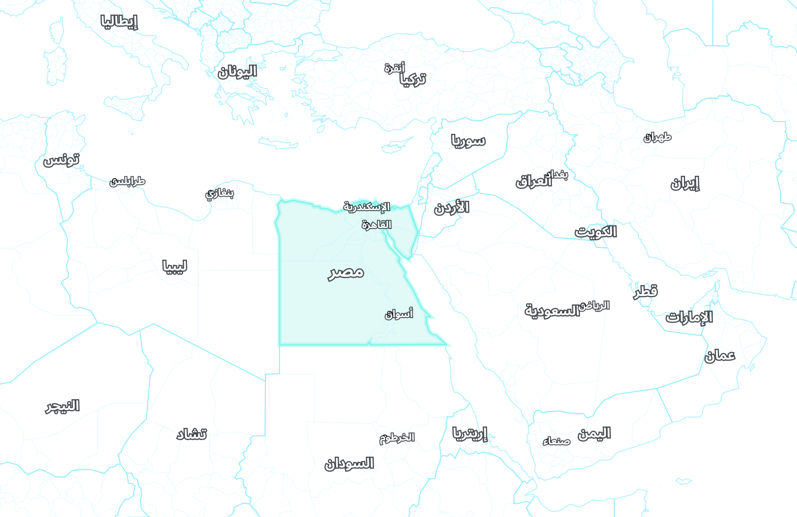

القاهرة
مصر
حسني مبارك
جمهورية رئاسية
الخزينة
36.0
مليار $
الاستقرار
58%
الشرعية
44
القوة البشرية
2.4
مليون
النفوذ
62
البحث
+18
/ شهر
السبت
1 يناير 2011
1×
احتجاجات واسعة في تونس
3
الخريطة:
سياسية
دولتي
الدولة
الاقتصاد
الداخلية والسياسة
الجيش
الخارجية
الاستخبارات
البحث
المزيد